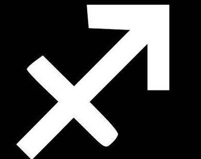
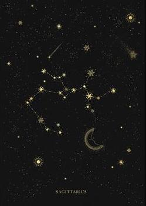

your sun is in...
Sagittarius

"The Archer"

Characteristics of a Sagittarius:
* restless
* optimistic
* generous
* humorous
* protective
* enthusiastic
* free
* restless
* optimistic
* generous
* humorous
* protective
* enthusiastic
* free
Sun Signs
Just as the sun is the center point of our solar system, the sun signs represent the center aspects of a person. Your sun sign is one of twelve zodiacs that is based on the position of the earth in relation to the sun on the day you were born. Because the sun has the strongest pull on the earth, sun signs influence people the most. Therefore, your sun sign can tell you the core characteristics of who you are and how you express yourself to the world.

Element - Fire
Each sign is represented by one of four elements: Fire, Earth, Air, or Water. The elements represent a ruling quality that the three signs within this element all share.
Sagittarius Celebrities

Taylor Swift
Born: December 13th, 1989

Scarlett Johansson
Born: November 22nd, 1984
Britney Spears
Born: December 2nd, 1981
Miley Cyrus
Born: November 23rd, 1992
Bill Nye the Science Guy
Born: November 27th, 1955
Tyra Banks
Born: December 4th, 1973
Ruling Planet:

Jupiter rules travel, philosophy, and hope
The ruling planet of a sign determines many of its associated character traits. Jupiter is the planet of wisdom and philosophy, making Sagittarians fair, bright, and morally good. Jupiter also has a strong connection to justice, so Sagittarius is often deemed one of the more progressive signs. And, especially since Sagittarians are fire signs, they are proud of these noble traits. As Jupiter represents travel and distance, Sagittarians are also known for making great discoveries, both intellectually and physically.
The Sign's Quality:
A sign's qualities correlate strongly to their relation to the seasons. The mutable signs all mark the end, or changing, of the seasons. This is greatly accepted and appreciated by Sagittarians, as their planet's rule of distance and travel makes them very open to changes and new experiences. They highly value their personal freedom, and, as the sign that leads into the start of winter, can sometimes be known to hibernate from others. However, their mutability also shows their openness and generosity, so if a Sagittarias likes you, they will be sure not to distance themself from you.
Mutable
geminis are falsely stereotyped as
standoffish
when in reality they are free and dignified
listen to your daily horoscope on spotify